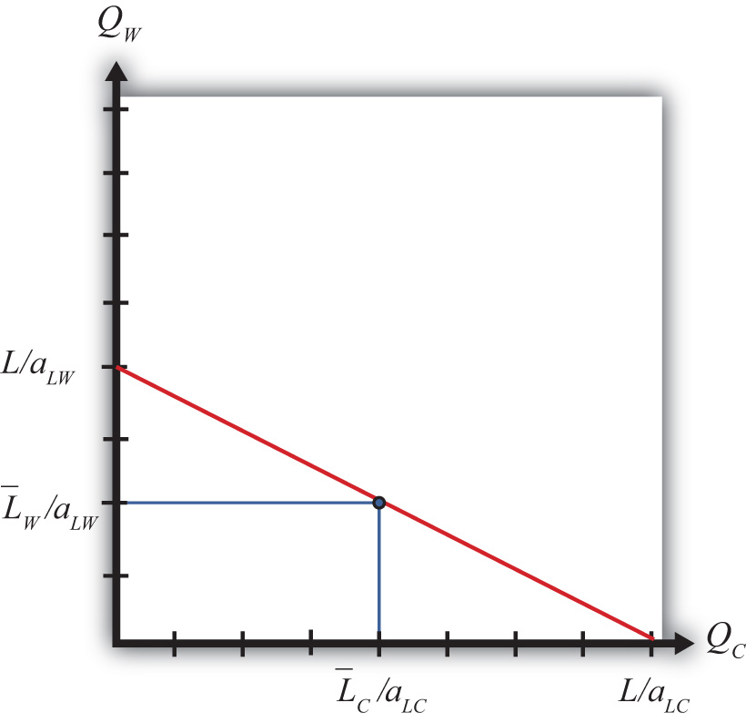

To derive the production possibility frontier (PPF) in the immobile factor model, it is useful to begin with a PPF from the Ricardian model. In the Ricardian model, the PPF is drawn as a straight line with endpoints given by L/aLC and L/aLW, where L is the total labor endowment available for use in the two industries (see Figure 4.1 "The Immobile Factor Model PPF"). Since labor is moveable across industries, any point along the PPF is a feasible production point that maintains full employment of labor.
Figure 4.1 The Immobile Factor Model PPF
Next, let’s suppose that some fraction of the L workers are cheesemakers, while the remainder are winemakers. Let be the number of cheesemakers and be the number of winemakers such that . If we assume that these workers cannot be moved to the other industry, then we are in the context of the immobile factor model.
In the immobile factor model, the PPF reduces to a single point represented by the blue dot in Figure 4.1 "The Immobile Factor Model PPF". This is the only production point that generates full employment of both wine workers and cheese workers. The production possibility set (PPS) consists of the set of points that is feasible whether or not full employment is maintained. The PPS is represented by the rectangle formed by the blue lines and the QC and QW axes.
Notice that in the immobile factor model, the concept of opportunity cost is not defined because it is impossible, by assumption, to increase the output of either good. No opportunity cost also means that neither country has a comparative advantage as defined in the Ricardian model. However, this does not mean there is no potential for advantageous trade.
Jeopardy Questions. As in the popular television game show, you are given an answer to a question and you must respond with the question. For example, if the answer is “a tax on imports,” then the correct question is “What is a tariff?”